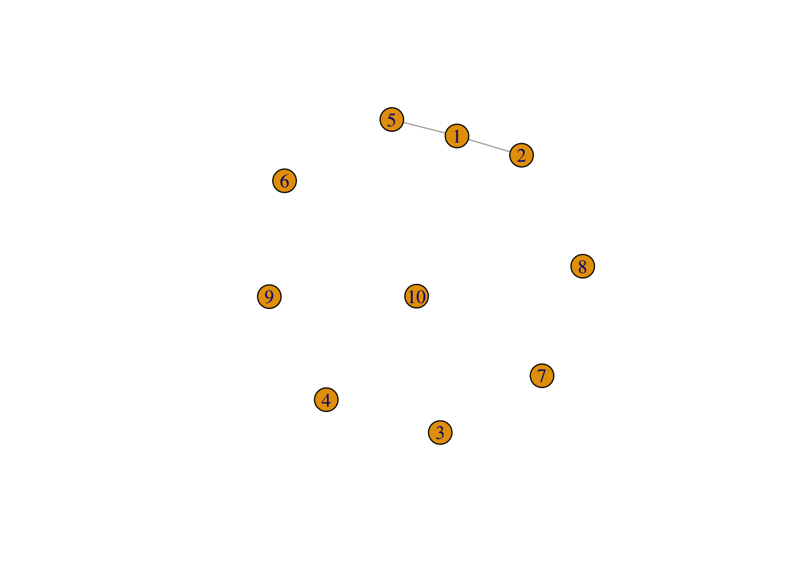
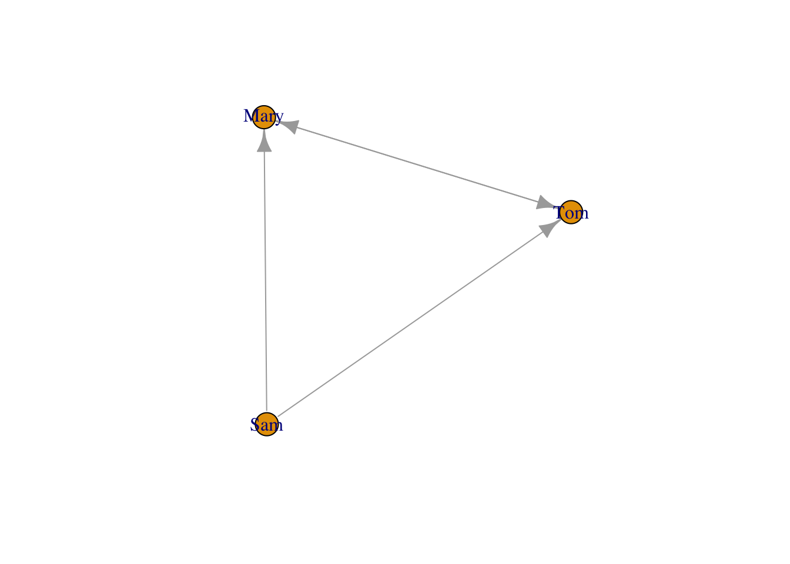
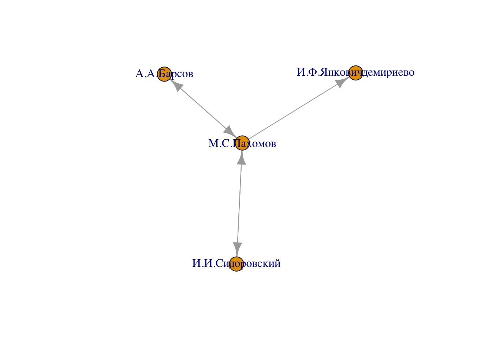

library("igraph")18 Сетевые данные в igraph
Сети – это все, что окружает нас.
Люк (2017)
Любые сети состоят из отдельных участников (людей или вещей в сети) и отношений между ними. Сети часто визуализируются с помощью графов –- структур, состоящих из множества участников (вершин) и линий (ребер или дуг), отображающих связи между ними. В гуманитарных науках в виде сети можно представить, например, отношения соавторства между исследователями, совместное появление персонажей в драматическом произведении или связи между философскими концептами.
В R доступно множество пакетов для работы с сетями (network, sna, UserNetR и др.), но в ближайших уроках мы сосредоточимся на одном из них под названием igraph.
18.1 Создание графа
18.1.1 Функция make_graph()
igraph предлагает много способов создания графа. Наиболее распространенный способ создания графа - make_graph(), который строит сеть на основе указанных ребер. Например, чтобы создать граф с 10 узлами (пронумерованными от 1 до 10) и двумя ребрами, соединяющими узлы 1-2 и 1-5:
g <- make_graph(edges = c(1, 2, 1, 5), n = 10, directed = FALSE)
plot(g)
Также можно использовать буквальную запись с помощью формульной нотации igraph. Выражения состоят из имен вершин и операторов ребер. Оператор ребра - это последовательность символов - и +, где первый используется для ребер, а второй - для стрелок. Ребра могут быть произвольно длинными, то есть вы можете использовать столько символов -, сколько нужно для “рисования” их. Если все операторы ребер состоят только из символов -, тогда граф будет ненаправленным, в то время как хотя бы один символ + подразумевает направленный граф:
g <- make_graph(~ 1--2, 1--5, 3, 4, 5, 6, 7, 8, 9, 10)Мы можем напечатать граф, чтобы получить сводку его узлов и ребер:
gIGRAPH e14f505 UN-- 10 2 --
+ attr: name (v/c)
+ edges from e14f505 (vertex names):
[1] 1--2 1--5Это означает: ненаправленный граф с 10 вершинами и 2 ребрами.
Направленность также можно узнать при помощи специальной функции.
is_directed(g)[1] FALSEg <- graph_from_literal(Sam-+Mary, Sam-+Tom, Mary++Tom)
gIGRAPH b3d1c79 DN-- 3 4 --
+ attr: name (v/c)
+ edges from b3d1c79 (vertex names):
[1] Sam ->Mary Sam ->Tom Mary->Tom Tom ->Maryplot(g)
Функция make_graph() также может создавать некоторые графы по названию. Например, вы можете создать граф, представляющий социальную сеть клуба каратэ Захарии, который показывает дружбу между 34 членами клуба каратэ в университете США в 1970-х годах:
g <- make_graph("Zachary")Вызовите документацию к функции, чтобы узнать, какие еще графы можно создать таким способом.
Вот еще несколько возможностей.
g.full = make_full_graph(7)
g.ring = make_ring(7)
g.tree = make_tree(7, children = 2, mode="undirected")
g.star = make_star(7, mode = "undirected")
par(mfrow = c(2,2), mai = rep(0.2, 4))
plot(g.full)
plot(g.ring)
plot(g.tree)
plot(g.star)
18.1.2 Cоциоматрица
Еще один способ – социоматрица, т.е. матрица, хранящая информацию о сети. Ее можно создать вручную.
netmat1 <- rbind(c(0,1,1,0,0),
c(0,0,1,1,0),
c(0,1,0,0,0),
c(0,0,0,0,0),
c(0,0,1,0,0))
rownames(netmat1) <- letters[1:5]
colnames(netmat1) <- letters[1:5]
g <- graph_from_adjacency_matrix(netmat1)
plot(g)
class(g)[1] "igraph"summary(g)IGRAPH fc81af3 DN-- 5 6 --
+ attr: name (v/c)18.1.3 Список ребер
Также матрицу можно построить при помощи списка ребер. Списки ребер меньше по размеру, и собирать сетевые данные в таком формате проще.
netmat2 <- rbind(c(1,2),
c(1,3),
c(2,3),
c(2,4),
c(3,2),
c(5,3))
g <- graph_from_edgelist(netmat2)
V(g)$name <- letters[1:5]
plot(g)
summary(g)IGRAPH 732ad5f DN-- 5 6 --
+ attr: name (v/c)18.1.4 Таблица
Воспользуемся датасетом, подготовленным Б.В. Ореховым и опубликованном на сайте Пушкинского дома, “Словарь русских писателей XVIII века: сеть персоналий”.
Датасет представляет собой осмысленные в терминах сетевого анализа междустатейные ссылки в Словаре русских писателей XVIII века (1988–2010. Вып. 1–3). Узлами сети выступают посвященные персоналиям статьи словаря, а ребрами — ссылки на другие статьи в том же словаре.
url <- "https://dataverse.pushdom.ru/api/access/datafile/3646"
download.file(url, destfile = "Persons_EDGES.csv")library(readr)Warning: package 'readr' was built under R version 4.5.2# у вас будет другой путь
writers_data <- read_tsv(file = "../files/Persons_EDGES.csv")
writers_dataЭту таблицу можно преобразовать в сеть несколькими способами. Можно использовать функцию graph_from_edgelist(), которая ожидает на входе матрицу с двумя столбцами или же создать граф напрямую из датафрейма.
library(dplyr)
writers <- writers_data |>
select(-Type) |>
graph_from_data_frame()
writersIGRAPH a4826a5 DN-- 780 4440 --
+ attr: name (v/c), Weight (e/n)
+ edges from a4826a5 (vertex names):
[1] Н.И.Ахвердов ->П.И.Богданович А.Д.Байбаков ->А.А.Барсов
[3] А.Д.Кантемир ->А.К.Барсов А.Д.Кантемир ->С.С.Волчков
[5] А.Д.Кантемир ->И.И.Ильинский А.Д.Кантемир ->Ф.Кролик
[7] А.Д.Кантемир ->М.В.Ломоносов А.Д.Кантемир ->Е.Прокопович
[9] А.Д.Кантемир ->А.П.Сумароков А.Д.Кантемир ->В.К.Тредиаковский
[11] П.М.Карабанов->А.А.Барсов П.М.Карабанов->И.И.Виноградов
[13] П.М.Карабанов->Д.П.Горчаков П.М.Карабанов->Г.Р.Державин
[15] П.М.Карабанов->С.Е.Десницкий П.М.Карабанов->И.И.Дмитриев
+ ... omitted several edgesОписание позволяет понять, что граф является направленным (D), а его узлы имеют имена (N). Всего в графе 780 вершин и 4440 связей.
Демонстрационная версия интерактивного приложения, построенного на сетевых данных, размещена здесь.
Разумеется, таблицу не обязательно импортировать, но можно создать самим. Например, на основе совместной встречаемости слов, которую вы уже умеете считать.
18.2 Вершины и ребра
Самая главная характеристика сети – это ее размер. Размер – это количество участников (members), которые называются узлами (nodes), вершинами (vertices) или акторами.
V(writers)+ 780/780 vertices, named, from a4826a5:
[1] Н.И.Ахвердов А.Д.Байбаков
[3] А.Д.Кантемир П.М.Карабанов
[5] Н.Карандашов Ф.В.Каржавин
[7] Н.Г.Карин П.Кохановский
[9] Н.А.Краевич П.Крайский
[11] В.И.Крамаренков И.Краснопольский
[13] Н.С.Краснопольский С.П.Крашенинников
[15] П.Н.Крекшин И.Кременецкий
[17] В.В.Крестинин Ф.В.Кречетов
[19] И.Кречетовский Г.А.Криновский
+ ... omitted several verticesvcount(writers)[1] 780Узнать число ребер и характер связей можно так
E(writers)+ 4440/4440 edges from a4826a5 (vertex names):
[1] Н.И.Ахвердов ->П.И.Богданович А.Д.Байбаков ->А.А.Барсов
[3] А.Д.Кантемир ->А.К.Барсов А.Д.Кантемир ->С.С.Волчков
[5] А.Д.Кантемир ->И.И.Ильинский А.Д.Кантемир ->Ф.Кролик
[7] А.Д.Кантемир ->М.В.Ломоносов А.Д.Кантемир ->Е.Прокопович
[9] А.Д.Кантемир ->А.П.Сумароков А.Д.Кантемир ->В.К.Тредиаковский
[11] П.М.Карабанов->А.А.Барсов П.М.Карабанов->И.И.Виноградов
[13] П.М.Карабанов->Д.П.Горчаков П.М.Карабанов->Г.Р.Державин
[15] П.М.Карабанов->С.Е.Десницкий П.М.Карабанов->И.И.Дмитриев
[17] П.М.Карабанов->ЕкатеринаII П.М.Карабанов->Н.М.Карамзин
[19] П.М.Карабанов->П.Г.Левшин П.М.Карабанов->А.А.Нартов
+ ... omitted several edgesecount(writers)[1] 444018.3 Плотность
Еще одна важная характеристика сети – это ее плотность.
edge_density(writers)[1] 0.007307199Плотность – это доля имеющихся связей по отношению к максимально возможному количеству связей. Формула плотности будет отличаться для направленных и ненаправленных сетей.
Направленный граф
\(\frac{L}{k\times(k - 1)}\)
Ненаправленный граф
\(\frac{2L}{k\times(k-1)}\)
Здесь \(k\times(k-1)\) – это максимально возможное число связей, а k - число акторов.
18.4 Компоненты
Компонента сети – это подгруппа, где все акторы связаны между собой прямо или косвенно.
components(writers)$no[1] 3components(writers)$csize[1] 776 2 2Обратим внимание: в нашем графе 4 писателя, которые не связаны с главной компонентой.
which(components(writers)$membership !=1)И.В.Паузе И.Выродов Э.Глюк А.Выродов
154 727 760 779 Интересная компания (точнее, две компании) из XVIII в. Иоганн-Вернер Паузе был переводчиком Эразма Роттердамского в начале XVIII века, и его также обычно причисляют к создателям «Зерцала». Братья Иван Выродов и Андрей Выродов – выпускники Московского благородного пансиона (ныне МГУ), а Эрнст Глюк – один из переводчиков Библии на русский язык.
18.5 Диаметр
Диаметр сети – количество шагов, которые нужно пройти, чтобы попасть из узла А в узел B; для сетей с несколькими компонентами учитывается та, что больше. Сначала вычисляются кратчайшие пути (геодезическое расстояние) между каждой парой узлов, затем из них берется максимальный.
lgc <- largest_component(writers)
diameter(lgc, directed = TRUE)[1] 11get_diameter(lgc)+ 12/776 vertices, named, from 5a30880:
[1] Н.Карандашов И.Г.Бакмейстер М.М.Щербатов
[4] Н.И.Новиков П.И.Богданович Н.Ф.Эмин
[7] Н.Р.Судовщиков А.М.Ченыхаев И.В.Нехачин
[10] В.Д.Голицын М.И.Прокудин-Горский Ф.П.Печерин farthest_vertices(lgc)$vertices
+ 2/776 vertices, named, from 5a30880:
[1] Н.Карандашов Ф.П.Печерин
$distance
[1] 11Посмотрим на кратчайшие пути.
shortest_paths(lgc, from = "Н.Карандашов", to = "Ф.П.Печерин")$vpath
$vpath[[1]]
+ 12/776 vertices, named, from 5a30880:
[1] Н.Карандашов И.Г.Бакмейстер М.М.Щербатов
[4] Н.И.Новиков П.И.Богданович Н.Ф.Эмин
[7] Н.Р.Судовщиков А.М.Ченыхаев И.В.Нехачин
[10] В.Д.Голицын М.И.Прокудин-Горский Ф.П.Печерин
$epath
NULL
$predecessors
NULL
$inbound_edges
NULLПочему Николай Карандашов оказался так далеко от Федора Печерина, нам решительно не известно.
18.6 Транзитивность
Коэффициент кластеризации, или транзитивность, отражает тенденцию к созданию закрытых треугольников, т.е. к замыканию. Транзитивность определяется как доля закрытых треугольников по отношению к общему количеству открытых и закрытых треугольников.
transitivity(writers)[1] 0.12714618.7 Атрибуты вершин
В датасете “Словарь…” в качестве атрибута вершины хранятся данные об имени автора:
names <-vertex_attr(writers)$name
names[1:12] [1] "Н.И.Ахвердов" "А.Д.Байбаков" "А.Д.Кантемир" "П.М.Карабанов"
[5] "Н.Карандашов" "Ф.В.Каржавин" "Н.Г.Карин" "П.Кохановский"
[9] "Н.А.Краевич" "П.Крайский" "В.И.Крамаренков" "И.Краснопольский"18.8 Фильтрация на основе значений атрибутов вершин
Атрибуты вершин можно использовать для того, чтобы задать новую подсеть для анализа.
vert <- which(vertex_attr(writers)$name == "М.С.Пахомов")
p <- induced_subgraph(writers, vids = vert)
pIGRAPH 8be6e0e DN-- 1 0 --
+ attr: name (v/c), Weight (e/n)
+ edges from 8be6e0e (vertex names):ПАХОМОВ Матвей Сергеевич [1745—1792], преподаватель Смольного ин-та, совм. с И. И. Сидоровским перевел с греч. языка «Разговоры Лукиана Самосатского» (1775—1784. Ч. 1—3), «Творения велемудрого Платона» (1780—1785. Ч. 1—3; с кратким изложением содержания перед текстом каждого рассуждения), «Павсания, или Павсаниево описание Еллады, то есть Греции» (1788—1789. Ч. 1—3) и «Землеописание» Страбона (последний перевод остался неизданным).
Мы отобрали всего один узел, что не очень интересно. Вот его соседи.
neighbors(writers, "М.С.Пахомов")+ 3/780 vertices, named, from a4826a5:
[1] И.И.Сидоровский И.Ф.Янковичдемириево А.А.Барсов СИДОРОВСКИЙ Иван Иванович [1748-1795], преподаватель Смольного ин-та. Совместно с М. С. Пахомовым перевел с греч. языка: «Разговоры Лукиана Самосатского» (1775—1784. Ч. 1—3), «Творения велемудрого Платона» (1780—1785. Ч. 1—3), «Павсаний, или Павсаниево описание Еллады, то есть Греции» (1788—1789. Ч. 1—3). Ч. 3 сочинений Платона и Ч. 3 «Разговоров…» переведены одним С. Также С. перевел с греч. сб. «Поучительных разных слов и бесед Св. Иоанна Златоустого» (1787—1791. Ч. 1—2), в котором мн. из произведений Златоуста были впервые представлены на рус. языке, и «Деяния церковные и гражданские от Рождества Христова до половины XV столетия, собранные Георгием Кедрином с продолжением других» (1794. Ч. 1—3). В конце жизни С. начал переводить «Толкование св. Кирилла Александрийского на 12 Малых Пророков».
p2 <- induced_subgraph(writers, vids = c(vert, neighbors(writers, "М.С.Пахомов")))plot(p2)
18.9 Функция make_ego_graph()
Make_ego_graph() создает (под)графы из всех соседей заданных вершин. Аргумент o можно мыслить как число “рукопожатий”: порядок 0 - это всегда сама v, порядок 1 - это v плюс ее ближайшие соседи, порядок 2 - это порядок 1 плюс ближайшие соседи вершин из порядка 1 и т.д. Попробуем найти “друзей друзей” М.С. Пахомова.
p3 <- make_ego_graph(
writers,
order = 2,
nodes = "М.С.Пахомов",
mode = "all"
)[[1]]
# функция позволит распечатать все ребра
# print_all(p3)
p3IGRAPH 4a9872c DN-- 48 266 --
+ attr: name (v/c), Weight (e/n)
+ edges from 4a9872c (vertex names):
[1] А.Д.Байбаков ->А.А.Барсов П.М.Карабанов->Н.М.Карамзин
[3] П.М.Карабанов->А.А.Барсов П.М.Карабанов->ЕкатеринаII
[5] И.И.Мелиссино->Н.И.Новиков И.И.Мелиссино->И.И.Бецкой
[7] И.И.Мелиссино->М.Н.Муравьев И.И.Мелиссино->А.А.Барсов
[9] И.И.Мелиссино->ЕкатеринаII И.И.Мелиссино->И.И.Шувалов
[11] И.И.Мелиссино->М.В.Ломоносов И.И.Мелиссино->А.П.Сумароков
[13] Ф.И.Миллер ->Н.И.Новиков Ф.И.Миллер ->Н.Н.Поповский
[15] Ф.И.Миллер ->Н.Н.Бантыш-Каменский Ф.И.Миллер ->В.Н.Татищев
+ ... omitted several edgesЧтобы изобразить такой граф, придется немного поправить настройки.
par(mar = rep(0,4), cex = 0.7)
layout_p3 <- layout_with_kk(p3)
plot(p3, vertex.size=6,
edge.arrow.size = 0.5,
vertex.label.dist = 1,
edge.curved = 0.2,
edge.color = "grey80",
vertex.color = "plum",
layout = layout_p3)М.С. Пахомов связан с Екатериной II через И.Ф. Янковича де Мириево, камерпажа императрицы, впоследствии (при Павле I) – генерал-майора и участника походов против Наполеона в 1805 и 1807 г., отличившегося в сражении под Аустерлицем.
Это можно подтвердить и другим, уже известным нам способом:
shortest_paths(writers, from = "М.С.Пахомов", to = "ЕкатеринаII")$vpath[[1]]+ 3/780 vertices, named, from a4826a5:
[1] М.С.Пахомов И.Ф.Янковичдемириево ЕкатеринаII Узнать размер ego-графа можно при помощи специальной функции.
# размер подграфа
ego_size(writers,
order = 2,
nodes = "М.С.Пахомов",
mode = "all")[1] 48Посмотрим, как растет размер сети при увеличении порядка.
library(purrr)
Attaching package: 'purrr'The following objects are masked from 'package:igraph':
compose, simplifyf <- function(x) {
ego_size(writers,
order = x,
nodes = "М.С.Пахомов",
mode = "all")
}
order <- 1:10
out <- map_dbl(order, f)
plot(order, out, "o")18.10 Атрибуты ребер
У ребер в данных “Словаря…” есть атрибут, но он везде одинаковый.
options(max.print=35)
edge_attr(writers)$Weight
[1] 1 1 1 1 1 1 1 1 1 1 1 1 1 1 1 1 1 1 1 1 1 1 1 1 1 1 1 1 1 1 1 1 1 1 1
[ reached 'max' / getOption("max.print") -- omitted 4405 entries ]18.11 Преобразование направленной сети в ненаправленную
Направленный граф бывает необходимо преобразовать в неправленный. Возьмем подграф “соседей” М.С. Пахомова и создадим симметричную сеть, оставив только те связи, где ссылки взаимны.
p4 <- as.undirected(p3, mode = "mutual")Warning: `as.undirected()` was deprecated in igraph 2.1.0.
ℹ Please use `as_undirected()` instead.p4IGRAPH 0b13408 UN-- 48 58 --
+ attr: name (v/c)
+ edges from 0b13408 (vertex names):
[1] И.И.Мелиссино --Н.И.Новиков
[2] Н.И.Новиков --М.И.Багрянский
[3] Ф.И.Миллер --Н.Н.Бантыш-Каменский
[4] Н.И.Новиков --Н.Н.Бантыш-Каменский
[5] Н.Н.Поповский --Ф.Я.Яремский
[6] М.С.Пахомов --И.И.Сидоровский
[7] И.И.Мелиссино --М.Н.Муравьев
[8] Н.И.Новиков --М.Н.Муравьев
+ ... omitted several edgesВ новой сети по-прежнему 48 узлов, но количество связей стало меньше (58 вместо 266).
par(mar = rep(0,4), cex = 0.7)
plot(p4, vertex.size=6,
edge.arrow.size = 0.5,
vertex.label.dist = 1,
edge.curved = 0.2,
edge.color = "grey80",
vertex.color = "plum",
layout = layout_p3)18.12 Удаление изолированных узлов
После симметризации некоторые узлы оказались изолированы. Удалим их. Для этого сначала необходимо найти узлы, степень которых равна 0.
d <- unname(degree(p4))
p4 <- set_vertex_attr(p4, name = "degree", value = d)Проверим.
vertex_attr(p4)$degree [1] 1 0 3 2 7 0 0 2 0 0 0 8 2 3 1 0 1 0 1 2 0 0 0 0 6
[26] 6 0 4 0 4 0 9 1 0 0 0 9 1 7 0 1 1 3 9 0 11 2 9p5 <- delete_vertices(p4, vertex_attr(p4)$degree == 0)
p5IGRAPH b354597 UN-- 28 58 --
+ attr: name (v/c), degree (v/n)
+ edges from b354597 (vertex names):
[1] И.И.Мелиссино --Н.И.Новиков
[2] Н.И.Новиков --М.И.Багрянский
[3] Ф.И.Миллер --Н.Н.Бантыш-Каменский
[4] Н.И.Новиков --Н.Н.Бантыш-Каменский
[5] Н.Н.Поповский --Ф.Я.Яремский
[6] М.С.Пахомов --И.И.Сидоровский
[7] И.И.Мелиссино --М.Н.Муравьев
[8] Н.И.Новиков --М.Н.Муравьев
+ ... omitted several edgespar(mar = rep(0,4), cex = 0.7)
layout_p5 <- layout_with_kk(p5)
plot(p5, vertex.size=6,
edge.arrow.size = 0.6,
vertex.label.dist = 1,
edge.curved = 0.2,
edge.color = "grey80",
vertex.color = "plum",
layout = layout_p5)
18.13 Сравнение графов
Убедимся, что графы отличаются.
identical_graphs(p4, p5)[1] FALSEДва графа называются изоморфными, если у них одинаковое число вершин (обозначим его n) и вершины каждого из них можно занумеровать так числами от 1 до n, что в первом графе две вершины соединены ребром тогда и только тогда, когда вершины с такими же номерами во втором графе соединены.
Проверим подграфы на изоморфность.
isomorphic(p4, p5)[1] FALSEТеперь произвольным образом переименуем узлы в p5, удалим один из атрибутов вершины (атрибуты ребер “потерялись” при симметризации) и снова проверим “двойника” на изоморфность.
p6 <- p5
V(p6)$name <- c(letters, "aa", "bb")
p6 <- delete_vertex_attr(p6, "degree")
p6IGRAPH b354597 UN-- 28 58 --
+ attr: name (v/c)
+ edges from b354597 (vertex names):
[1] b--d d--g c--h d--h f--i e--k b--m d--m f--m d--n g--n h--n
[13] m--n a--q e--q f--q l--q m--q d--s l--s o--s p--s q--s f--u
[25] p--u r--u s--u q--v f--w s--x c--y f--y n--y o--y q--y u--y
[37] x--y f--z j--z m--z n--z o--z p--z s--z u--z x--z y--z q--aa
[49] t--aa b--bb d--bb f--bb o--bb p--bb s--bb u--bb y--bb z--bbСнова сравним графы двумя способами.
identical_graphs(p5, p6)[1] FALSEisomorphic(p5, p6)[1] TRUE
Люк, Дуглас. 2017. Анализ сетей (графов) в среде R: Руководство пользователя. ДМК.